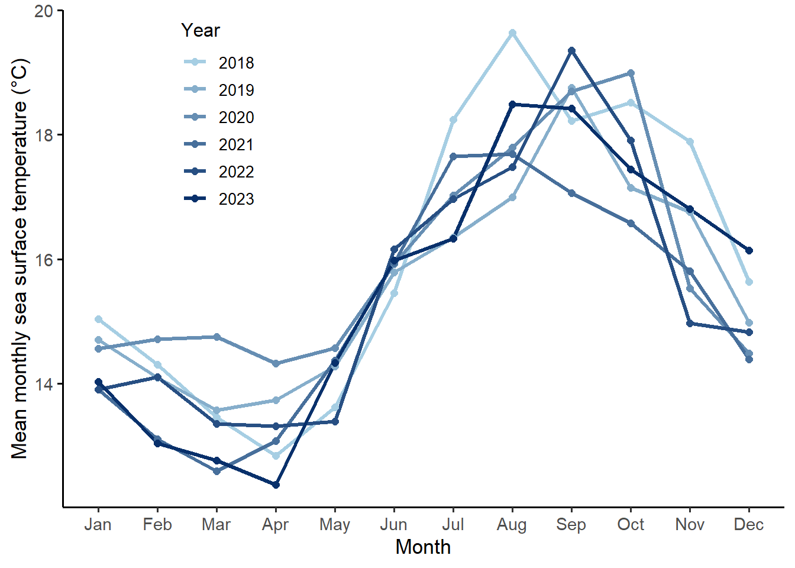

suppressPackageStartupMessages({
library(tidyverse) #reading in packages
library(dplyr)
library(here)
library(gt)
library(janitor)
library(ggplot2)})ENVS_193DS_Final
githubrepo:
https://github.com/ButterEggs/ENVS-193DS_spring-2025_final
Problem 1.
a. Transparent statistical methods
In part 1, they used a Pearson’s correlation test. In part 2, they used a ANOVA test.
b. More information needed
In part 2, the one-way ANOVA test compares the nitrogen loads from five different sources showing how at least one group differs from the others, but not which ones. This is shown with a statistically significant result of (p = 0.02). With this information, we need to conduct a Tukey’s Honestly Significant Difference (HSD) test in order to identify which specific sources, such as fertilizer or urban runoff, have significantly different mean nitrogen loads. This would help clarify the biological relevance of the results by showing which sources are driving the overall difference. Furthermore, the p-value tells us that the result is statistically significant, but doesn’t indicate how much variance in the nitrogen load is explained by the type of source. This is why an effect size for ANOVA would help add context to assess if the differences between the sources are biologically meaningful.
c. Suggestions for rewriting
We found a (insert effect size) relationship between distance from headwater (km) and annual total nitrogen load (kg year⁻¹), (Pearson’s correlation test: r = correlation coefficient, p = 0.03, α = significance level)
We found that there is a (insert effect size) difference in average nitrogen load (kg year⁻¹) between source: urban land, atmospheric deposition, fertilizer, wastewater treatment, and grasslands (one-way ANOVA, F(4, df_within) = F-statistic, p = 0.02, α = significance level).
Problem 2. Data visualization
a. Cleaning and summarizing
sst <- read_csv(here("data", "SST_update2023.csv"), show_col_types = FALSE) #reading in sst data
sst_clean <- sst |> #cleaning sst data
clean_names() |>
mutate(
date = ymd(date),
year = factor(year(date)), #
month = factor(month(date, label = TRUE, abbr = TRUE),
levels = month.abb,
ordered = TRUE)) |> # ordered Jan–Dec
filter(year %in% c("2018", "2019", "2020", "2021", "2022", "2023")) |> #filtered for years from 2018-2023
droplevels() |>
group_by(year, month) |>
summarize(mean_monthly_sst = mean(temp, na.rm = TRUE), .groups = "drop")
slice_sample(sst_clean, n = 5)# A tibble: 5 × 3
year month mean_monthly_sst
<fct> <ord> <dbl>
1 2019 Jan 14.7
2 2023 Oct 17.4
3 2018 Mar 13.5
4 2023 Jul 16.3
5 2020 Apr 14.3str(sst_clean)tibble [72 × 3] (S3: tbl_df/tbl/data.frame)
$ year : Factor w/ 6 levels "2018","2019",..: 1 1 1 1 1 1 1 1 1 1 ...
$ month : Ord.factor w/ 12 levels "Jan"<"Feb"<"Mar"<..: 1 2 3 4 5 6 7 8 9 10 ...
$ mean_monthly_sst: num [1:72] 15 14.3 13.5 12.8 13.6 ...b. Visualize the data
ggplot(sst_clean, aes(x = month, y = mean_monthly_sst, group = year, color = year)) +
#geometries for lines and points
geom_line(linewidth = 1.1) +
geom_point(size = 2) +
#labels of axes
labs(
x = "Month",
y = "Mean monthly sea surface temperature (°C)",
color = "Year"
) +
#color gradient from light to dark
scale_color_manual(
values = colorRampPalette(c("#a6cee3", "#08306b"))(6)
) +
#legend inside plot panel
theme_classic(base_size = 13) +
theme(
axis.ticks.y = element_line(color = "black"), # show y-axis ticks
axis.line.y = element_line(color = "black"), # show y-axis line
legend.position = c(0.15, 1.0),
legend.justification = c(0, 1),
legend.background = element_blank(),
panel.background = element_rect(fill = "white", color = NA),
panel.grid = element_blank(),
axis.text = element_text(size = 11),
axis.title = element_text(size = 13),
legend.title = element_text(size = 12),
legend.text = element_text(size = 10)
)
Problem 4a. Comparing visualizations
Looking at my affective visualization on homework 3 compared to my exploratory visualization on homework 2, my affective visualization conveys a more representational meaning. The drawings, pictures, and symbols convey the variables that influenced the visuals of my data but is not accurate or to-scale. On the other hand my exploratory visualization uses accurate to-scale plots that represent my data and is meant for analysis.
Looking at both types of visualizations, they both convey the same data which is steps vs school day and also temperature. Both visualizations emphasize how the steps variable is influenced by either the type of day or temperature.
With only 3 observations in my exploratory visualization since I just started to collect data, I only had the mean steps for school days which was about 7000 steps. Similarly for the steps vs temperature plot, no trends could be made since there was only 3 observations. For the affective visualization, I made the assumption that steps were higher on non-school days than school days, in addition to having all the other variables pointing towards that assumption.
Feedback on my visualization included adding a some type of representation for what a school day looked like compared to a non-school day. With this feedback, I included a photo of Storke tower to represent a school day and a photo of my workplace to represent my non-school days. I also received feedback about incorporating my actual data making my visualization to-scale, although I didn’t do this since it was just supposed to be more of a representation.